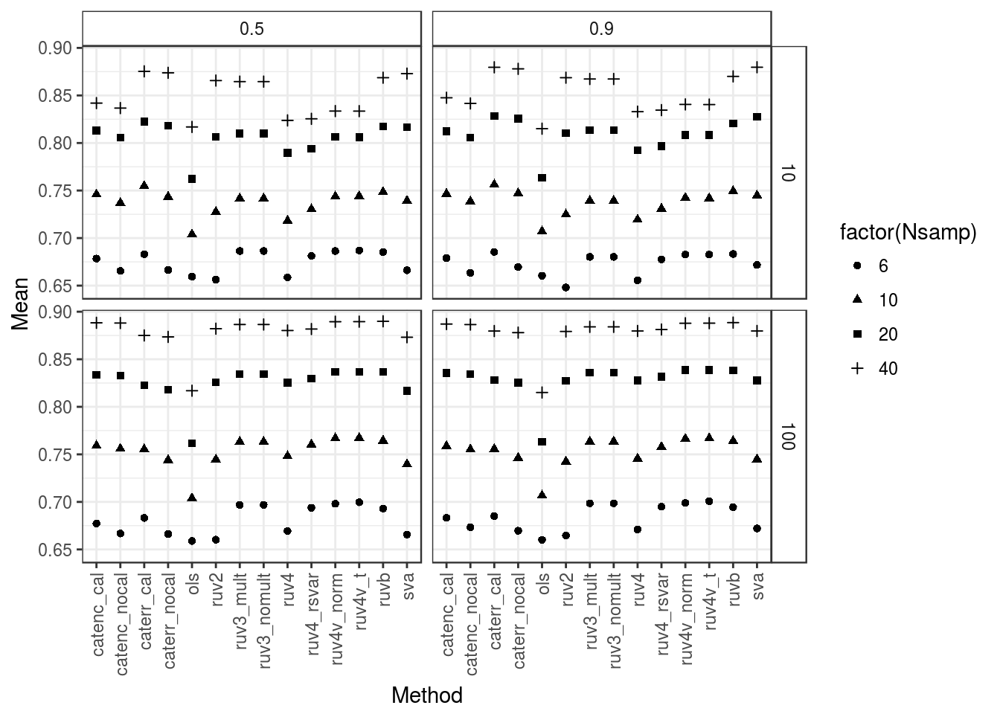
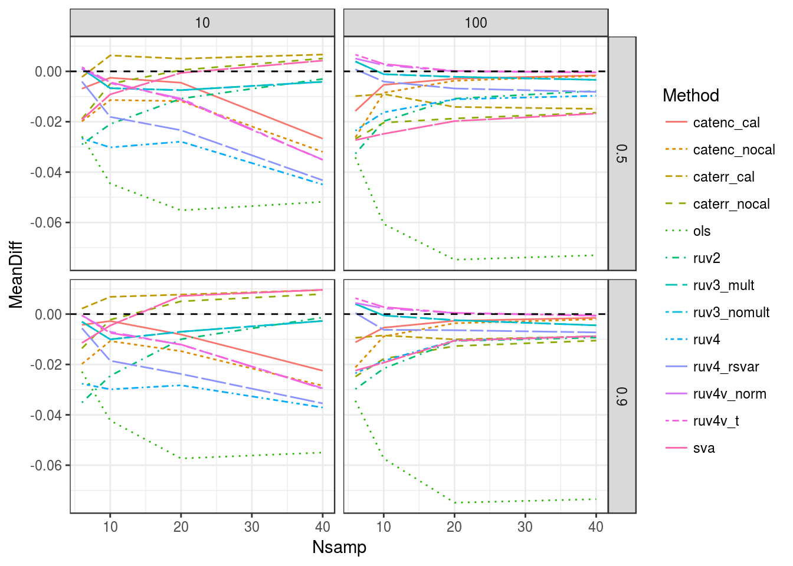
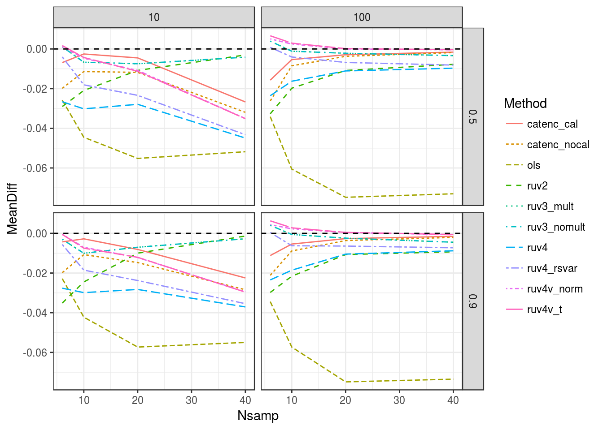

I ran simulations using the code here. Specifically, I performed Poisson thinning using the seqgendiff package under the following settings:
suppressMessages(library(dplyr))
library(ggplot2)
load("../output/sims_out/pvalue_matrices.Rd")
sout <- as_data_frame(sout)
sout$current_seed <- unlist(sout$current_seed)
sout$nullpi <- unlist(sout$nullpi)
sout$Nsamp <- unlist(sout$Nsamp)
sout$ncontrols <- unlist(sout$ncontrols)
head(sout)## # A tibble: 6 × 5
## pvalues current_seed nullpi Nsamp ncontrols
## <list> <dbl> <dbl> <dbl> <dbl>
## 1 <dbl [1,000 × 16]> 2223 0.5 6 10
## 2 <dbl [1,000 × 16]> 2224 0.5 6 10
## 3 <dbl [1,000 × 16]> 2225 0.5 6 10
## 4 <dbl [1,000 × 16]> 2226 0.5 6 10
## 5 <dbl [1,000 × 16]> 2227 0.5 6 10
## 6 <dbl [1,000 × 16]> 2228 0.5 6 10get_auc <- function(pmat) {
pvalue_indices <- colnames(pmat) != "which_null" & colnames(pmat) != "control_genes"
null_col <- which(colnames(pmat) == "which_null")
control_col <- which(colnames(pmat) == "control_genes")
non_control_genes <- !as.logical(pmat[, control_col])
auc_vec <- c()
for(index in 1:ncol(pmat)) {
if (pvalue_indices[index]) {
auc_vec <- c(auc_vec, pROC::auc(predictor = pmat[non_control_genes, index],
response = pmat[non_control_genes, null_col]))
}
}
names(auc_vec) <- colnames(pmat)[pvalue_indices]
return(auc_vec)
}
auc_out <- sapply(sout$pvalues[sout$nullpi != 1], FUN = get_auc)
auc_dat <- as_data_frame(t(auc_out))
stopifnot(all(head(auc_dat) == head(t(auc_out))))
auc_dat$nullpi <- sout$nullpi[sout$nullpi != 1]
auc_dat$Nsamp <- sout$Nsamp[sout$nullpi != 1]
auc_dat$ncontrols <- sout$ncontrols[sout$nullpi != 1]
saveRDS(object = auc_dat, file = "../output/sims_out/pvalue_mat_auc.Rds")Compute sample means
auc_dat <- readRDS("../output/sims_out/pvalue_mat_auc.Rds")
longdat <- tidyr::gather(auc_dat, key = "Method", value = "AUC", ols:ruvb)
sumdat <- longdat %>% group_by(nullpi, Nsamp, ncontrols, Method) %>%
summarise(Mean = mean(AUC))
ggplot(sumdat, mapping = aes(x = Method, y = Mean, pch = factor(Nsamp))) +
facet_grid(ncontrols ~ nullpi) +
geom_point() +
theme_bw() +
theme(axis.text.x = element_text(angle = 90, hjust = 1, vjust = 0.5),
strip.background = element_rect(fill = "white"))
Note that the methods that do not use control genes usually have better performance. This is most certainly due to shrinkage.
I am going to recapitulate the plots in the RUVB paper.
temp <- (select(auc_dat, -c(ruvb, nullpi, Nsamp, ncontrols)) - auc_dat$ruvb) %>%
bind_cols(select(auc_dat, nullpi, Nsamp, ncontrols)) %>%
tidyr::gather(key = "Method", value = "diff", ols:caterr_cal) %>%
group_by(nullpi, Nsamp, ncontrols, Method) %>%
summarize(MeanDiff = mean(diff)) %>%
ungroup()
ggplot(data = temp, mapping = aes(x = Nsamp, y = MeanDiff, color = Method, linetype = Method)) +
facet_grid(nullpi ~ ncontrols) +
geom_line() +
theme_bw() +
geom_hline(yintercept = 0, lty = 2)
Again, notice how the methods that do not use control genes actually do better in terms of AUC. But in terms of methods that use controls, we get the same plots as in the paper:
data_nonc <- filter(temp, temp$Method != "caterr_cal" & temp$Method != "caterr_nocal" &
temp$Method != "sva")
ggplot(data = data_nonc,
mapping = aes(x = Nsamp, y = MeanDiff, color = Method, linetype = Method)) +
facet_grid(nullpi ~ ncontrols) +
geom_line() +
theme_bw() +
geom_hline(yintercept = 0, lty = 2)
Note that it looks a little different than in the paper because “CATEc” in the paper is “ruv4v_norm” here. “CATE” in the paper is “catenc_cal” here, “RUV4c” in the paper is “ruv4_rsvar” here.
sessionInfo()## R version 3.3.2 (2016-10-31)
## Platform: x86_64-pc-linux-gnu (64-bit)
## Running under: Ubuntu 16.04.2 LTS
##
## locale:
## [1] LC_CTYPE=en_US.UTF-8 LC_NUMERIC=C
## [3] LC_TIME=en_US.UTF-8 LC_COLLATE=en_US.UTF-8
## [5] LC_MONETARY=en_US.UTF-8 LC_MESSAGES=en_US.UTF-8
## [7] LC_PAPER=en_US.UTF-8 LC_NAME=C
## [9] LC_ADDRESS=C LC_TELEPHONE=C
## [11] LC_MEASUREMENT=en_US.UTF-8 LC_IDENTIFICATION=C
##
## attached base packages:
## [1] stats graphics grDevices utils datasets methods base
##
## other attached packages:
## [1] ggplot2_2.2.1 dplyr_0.5.0
##
## loaded via a namespace (and not attached):
## [1] Rcpp_0.12.9 knitr_1.15.1 magrittr_1.5 munsell_0.4.3
## [5] colorspace_1.3-2 R6_2.2.0 stringr_1.1.0 plyr_1.8.4
## [9] tools_3.3.2 grid_3.3.2 gtable_0.2.0 DBI_0.5-1
## [13] htmltools_0.3.5 yaml_2.1.14 lazyeval_0.2.0 assertthat_0.1
## [17] rprojroot_1.2 digest_0.6.11 tibble_1.2 reshape2_1.4.2
## [21] tidyr_0.6.0 evaluate_0.10 rmarkdown_1.3 labeling_0.3
## [25] stringi_1.1.2 scales_0.4.1 backports_1.0.5This site was created with R Markdown